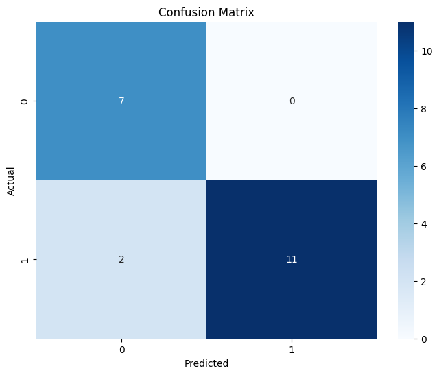

Nama: Ahmad Nasrudin Jamil
NIM : 210411100098
Kelas : Pencarian dan Penambangan Web B
Klasifikasi Berita dengan Reduksi Dimensi#
Implementasi#
Library#
import pandas as pd
import numpy as np
import seaborn as sns
import matplotlib.pyplot as plt
from sklearn.feature_extraction.text import TfidfVectorizer
from sklearn.linear_model import LogisticRegression
from sklearn.decomposition import TruncatedSVD
from sklearn.metrics import accuracy_score, confusion_matrix
import pickle
Dataset#
# Load the CSV files
Xtrain = pd.read_csv('Xtrain.csv')
Xtest = pd.read_csv('Xtest.csv')
Ytrain = pd.read_csv('Ytrain.csv')
Ytest = pd.read_csv('Ytest.csv')
print("Data has been loaded successfully.")
---------------------------------------------------------------------------
FileNotFoundError Traceback (most recent call last)
<ipython-input-2-946f291b6542> in <cell line: 2>()
1 # Load the CSV files
----> 2 Xtrain = pd.read_csv('Xtrain.csv')
3 Xtest = pd.read_csv('Xtest.csv')
4 Ytrain = pd.read_csv('Ytrain.csv')
5 Ytest = pd.read_csv('Ytest.csv')
/usr/local/lib/python3.10/dist-packages/pandas/io/parsers/readers.py in read_csv(filepath_or_buffer, sep, delimiter, header, names, index_col, usecols, dtype, engine, converters, true_values, false_values, skipinitialspace, skiprows, skipfooter, nrows, na_values, keep_default_na, na_filter, verbose, skip_blank_lines, parse_dates, infer_datetime_format, keep_date_col, date_parser, date_format, dayfirst, cache_dates, iterator, chunksize, compression, thousands, decimal, lineterminator, quotechar, quoting, doublequote, escapechar, comment, encoding, encoding_errors, dialect, on_bad_lines, delim_whitespace, low_memory, memory_map, float_precision, storage_options, dtype_backend)
1024 kwds.update(kwds_defaults)
1025
-> 1026 return _read(filepath_or_buffer, kwds)
1027
1028
/usr/local/lib/python3.10/dist-packages/pandas/io/parsers/readers.py in _read(filepath_or_buffer, kwds)
618
619 # Create the parser.
--> 620 parser = TextFileReader(filepath_or_buffer, **kwds)
621
622 if chunksize or iterator:
/usr/local/lib/python3.10/dist-packages/pandas/io/parsers/readers.py in __init__(self, f, engine, **kwds)
1618
1619 self.handles: IOHandles | None = None
-> 1620 self._engine = self._make_engine(f, self.engine)
1621
1622 def close(self) -> None:
/usr/local/lib/python3.10/dist-packages/pandas/io/parsers/readers.py in _make_engine(self, f, engine)
1878 if "b" not in mode:
1879 mode += "b"
-> 1880 self.handles = get_handle(
1881 f,
1882 mode,
/usr/local/lib/python3.10/dist-packages/pandas/io/common.py in get_handle(path_or_buf, mode, encoding, compression, memory_map, is_text, errors, storage_options)
871 if ioargs.encoding and "b" not in ioargs.mode:
872 # Encoding
--> 873 handle = open(
874 handle,
875 ioargs.mode,
FileNotFoundError: [Errno 2] No such file or directory: 'Xtrain.csv'
print(Xtrain)
0
0 endometriosis kondisi jaring endometrium sejat...
1 daun pandan bahan alami jadi obat tradisional ...
2 menteri budaya fadli zon tim kaji gabung undan...
3 sakit wasir timbul kalang orang dewasa usia sa...
4 universitas indonesia ui sorot kondisi kembang...
.. ...
75 stigma putar sehat jiwa sulit hilang stigma de...
76 buah terong kaya antioksidan serat potasium vi...
77 federasi serikat guru indonesia fsgi tolak uji...
78 tumor tumbuh sel normal tumor tumbuh tubuh kel...
79 batas asupan gula din hamil usia anak anak dam...
[80 rows x 1 columns]
print(Ytrain)
0
0 1
1 1
2 0
3 1
4 0
.. ..
75 1
76 1
77 0
78 1
79 1
[80 rows x 1 columns]
TF IDF#
Data Train#
vect = TfidfVectorizer()
tfidf_matrix = vect.fit_transform(Xtrain.iloc[:, 0])
terms = vect.get_feature_names_out()
tfidf = pd.DataFrame(data=tfidf_matrix.toarray(), columns=terms)
tfidf
| aba | abad | abadi | abai | abdi | abdul | abroad | ac | academy | acak | ... | yoga | yogyakarta | your | youtube | yusif | zaman | zat | zinc | zon | zonasi | |
|---|---|---|---|---|---|---|---|---|---|---|---|---|---|---|---|---|---|---|---|---|---|
| 0 | 0.0 | 0.0 | 0.0 | 0.031945 | 0.00000 | 0.0 | 0.0 | 0.0 | 0.0 | 0.00000 | ... | 0.0 | 0.0 | 0.0 | 0.000000 | 0.0 | 0.0 | 0.000000 | 0.0 | 0.000000 | 0.0 |
| 1 | 0.0 | 0.0 | 0.0 | 0.000000 | 0.00000 | 0.0 | 0.0 | 0.0 | 0.0 | 0.00000 | ... | 0.0 | 0.0 | 0.0 | 0.000000 | 0.0 | 0.0 | 0.000000 | 0.0 | 0.000000 | 0.0 |
| 2 | 0.0 | 0.0 | 0.0 | 0.000000 | 0.00000 | 0.0 | 0.0 | 0.0 | 0.0 | 0.00000 | ... | 0.0 | 0.0 | 0.0 | 0.054389 | 0.0 | 0.0 | 0.000000 | 0.0 | 0.231852 | 0.0 |
| 3 | 0.0 | 0.0 | 0.0 | 0.000000 | 0.00000 | 0.0 | 0.0 | 0.0 | 0.0 | 0.00000 | ... | 0.0 | 0.0 | 0.0 | 0.000000 | 0.0 | 0.0 | 0.000000 | 0.0 | 0.000000 | 0.0 |
| 4 | 0.0 | 0.0 | 0.0 | 0.000000 | 0.04322 | 0.0 | 0.0 | 0.0 | 0.0 | 0.00000 | ... | 0.0 | 0.0 | 0.0 | 0.000000 | 0.0 | 0.0 | 0.000000 | 0.0 | 0.000000 | 0.0 |
| ... | ... | ... | ... | ... | ... | ... | ... | ... | ... | ... | ... | ... | ... | ... | ... | ... | ... | ... | ... | ... | ... |
| 75 | 0.0 | 0.0 | 0.0 | 0.000000 | 0.00000 | 0.0 | 0.0 | 0.0 | 0.0 | 0.00000 | ... | 0.0 | 0.0 | 0.0 | 0.000000 | 0.0 | 0.0 | 0.000000 | 0.0 | 0.000000 | 0.0 |
| 76 | 0.0 | 0.0 | 0.0 | 0.000000 | 0.00000 | 0.0 | 0.0 | 0.0 | 0.0 | 0.00000 | ... | 0.0 | 0.0 | 0.0 | 0.000000 | 0.0 | 0.0 | 0.033109 | 0.0 | 0.000000 | 0.0 |
| 77 | 0.0 | 0.0 | 0.0 | 0.000000 | 0.00000 | 0.0 | 0.0 | 0.0 | 0.0 | 0.00000 | ... | 0.0 | 0.0 | 0.0 | 0.000000 | 0.0 | 0.0 | 0.000000 | 0.0 | 0.000000 | 0.0 |
| 78 | 0.0 | 0.0 | 0.0 | 0.000000 | 0.00000 | 0.0 | 0.0 | 0.0 | 0.0 | 0.00000 | ... | 0.0 | 0.0 | 0.0 | 0.000000 | 0.0 | 0.0 | 0.000000 | 0.0 | 0.000000 | 0.0 |
| 79 | 0.0 | 0.0 | 0.0 | 0.000000 | 0.00000 | 0.0 | 0.0 | 0.0 | 0.0 | 0.06808 | ... | 0.0 | 0.0 | 0.0 | 0.000000 | 0.0 | 0.0 | 0.000000 | 0.0 | 0.000000 | 0.0 |
80 rows × 2847 columns
# Menyimpan vectorizer
with open('tfidf_vectorizer.pkl', 'wb') as f:
pickle.dump(vect, f)
with open('tfidf_matrix.pkl', 'wb') as f:
pickle.dump(tfidf, f)
Data Test#
tfidf_matrix_baru = vect.transform(Xtest.iloc[:, 0])
terms_baru = vect.get_feature_names_out()
tfidf_baru = pd.DataFrame(data=tfidf_matrix_baru.toarray(), columns=terms_baru)
tfidf_baru
| aba | abad | abadi | abai | abdi | abdul | abroad | ac | academy | acak | ... | yoga | yogyakarta | your | youtube | yusif | zaman | zat | zinc | zon | zonasi | |
|---|---|---|---|---|---|---|---|---|---|---|---|---|---|---|---|---|---|---|---|---|---|
| 0 | 0.0 | 0.0 | 0.0 | 0.000000 | 0.0 | 0.0 | 0.0 | 0.0 | 0.000000 | 0.0 | ... | 0.0 | 0.0 | 0.0 | 0.0 | 0.0 | 0.000000 | 0.000000 | 0.0 | 0.0 | 0.0 |
| 1 | 0.0 | 0.0 | 0.0 | 0.000000 | 0.0 | 0.0 | 0.0 | 0.0 | 0.000000 | 0.0 | ... | 0.0 | 0.0 | 0.0 | 0.0 | 0.0 | 0.000000 | 0.000000 | 0.0 | 0.0 | 0.0 |
| 2 | 0.0 | 0.0 | 0.0 | 0.000000 | 0.0 | 0.0 | 0.0 | 0.0 | 0.051977 | 0.0 | ... | 0.0 | 0.0 | 0.0 | 0.0 | 0.0 | 0.000000 | 0.000000 | 0.0 | 0.0 | 0.0 |
| 3 | 0.0 | 0.0 | 0.0 | 0.000000 | 0.0 | 0.0 | 0.0 | 0.0 | 0.000000 | 0.0 | ... | 0.0 | 0.0 | 0.0 | 0.0 | 0.0 | 0.000000 | 0.000000 | 0.0 | 0.0 | 0.0 |
| 4 | 0.0 | 0.0 | 0.0 | 0.000000 | 0.0 | 0.0 | 0.0 | 0.0 | 0.000000 | 0.0 | ... | 0.0 | 0.0 | 0.0 | 0.0 | 0.0 | 0.000000 | 0.000000 | 0.0 | 0.0 | 0.0 |
| 5 | 0.0 | 0.0 | 0.0 | 0.000000 | 0.0 | 0.0 | 0.0 | 0.0 | 0.000000 | 0.0 | ... | 0.0 | 0.0 | 0.0 | 0.0 | 0.0 | 0.050503 | 0.101006 | 0.0 | 0.0 | 0.0 |
| 6 | 0.0 | 0.0 | 0.0 | 0.000000 | 0.0 | 0.0 | 0.0 | 0.0 | 0.000000 | 0.0 | ... | 0.0 | 0.0 | 0.0 | 0.0 | 0.0 | 0.000000 | 0.000000 | 0.0 | 0.0 | 0.0 |
| 7 | 0.0 | 0.0 | 0.0 | 0.000000 | 0.0 | 0.0 | 0.0 | 0.0 | 0.000000 | 0.0 | ... | 0.0 | 0.0 | 0.0 | 0.0 | 0.0 | 0.000000 | 0.000000 | 0.0 | 0.0 | 0.0 |
| 8 | 0.0 | 0.0 | 0.0 | 0.000000 | 0.0 | 0.0 | 0.0 | 0.0 | 0.000000 | 0.0 | ... | 0.0 | 0.0 | 0.0 | 0.0 | 0.0 | 0.000000 | 0.000000 | 0.0 | 0.0 | 0.0 |
| 9 | 0.0 | 0.0 | 0.0 | 0.000000 | 0.0 | 0.0 | 0.0 | 0.0 | 0.000000 | 0.0 | ... | 0.0 | 0.0 | 0.0 | 0.0 | 0.0 | 0.000000 | 0.000000 | 0.0 | 0.0 | 0.0 |
| 10 | 0.0 | 0.0 | 0.0 | 0.000000 | 0.0 | 0.0 | 0.0 | 0.0 | 0.000000 | 0.0 | ... | 0.0 | 0.0 | 0.0 | 0.0 | 0.0 | 0.000000 | 0.000000 | 0.0 | 0.0 | 0.0 |
| 11 | 0.0 | 0.0 | 0.0 | 0.000000 | 0.0 | 0.0 | 0.0 | 0.0 | 0.000000 | 0.0 | ... | 0.0 | 0.0 | 0.0 | 0.0 | 0.0 | 0.000000 | 0.000000 | 0.0 | 0.0 | 0.0 |
| 12 | 0.0 | 0.0 | 0.0 | 0.039012 | 0.0 | 0.0 | 0.0 | 0.0 | 0.048457 | 0.0 | ... | 0.0 | 0.0 | 0.0 | 0.0 | 0.0 | 0.000000 | 0.000000 | 0.0 | 0.0 | 0.0 |
| 13 | 0.0 | 0.0 | 0.0 | 0.043576 | 0.0 | 0.0 | 0.0 | 0.0 | 0.000000 | 0.0 | ... | 0.0 | 0.0 | 0.0 | 0.0 | 0.0 | 0.000000 | 0.000000 | 0.0 | 0.0 | 0.0 |
| 14 | 0.0 | 0.0 | 0.0 | 0.000000 | 0.0 | 0.0 | 0.0 | 0.0 | 0.000000 | 0.0 | ... | 0.0 | 0.0 | 0.0 | 0.0 | 0.0 | 0.000000 | 0.000000 | 0.0 | 0.0 | 0.0 |
| 15 | 0.0 | 0.0 | 0.0 | 0.000000 | 0.0 | 0.0 | 0.0 | 0.0 | 0.000000 | 0.0 | ... | 0.0 | 0.0 | 0.0 | 0.0 | 0.0 | 0.000000 | 0.083434 | 0.0 | 0.0 | 0.0 |
| 16 | 0.0 | 0.0 | 0.0 | 0.000000 | 0.0 | 0.0 | 0.0 | 0.0 | 0.000000 | 0.0 | ... | 0.0 | 0.0 | 0.0 | 0.0 | 0.0 | 0.000000 | 0.000000 | 0.0 | 0.0 | 0.0 |
| 17 | 0.0 | 0.0 | 0.0 | 0.031353 | 0.0 | 0.0 | 0.0 | 0.0 | 0.000000 | 0.0 | ... | 0.0 | 0.0 | 0.0 | 0.0 | 0.0 | 0.000000 | 0.000000 | 0.0 | 0.0 | 0.0 |
| 18 | 0.0 | 0.0 | 0.0 | 0.000000 | 0.0 | 0.0 | 0.0 | 0.0 | 0.000000 | 0.0 | ... | 0.0 | 0.0 | 0.0 | 0.0 | 0.0 | 0.000000 | 0.000000 | 0.0 | 0.0 | 0.0 |
| 19 | 0.0 | 0.0 | 0.0 | 0.000000 | 0.0 | 0.0 | 0.0 | 0.0 | 0.000000 | 0.0 | ... | 0.0 | 0.0 | 0.0 | 0.0 | 0.0 | 0.000000 | 0.000000 | 0.0 | 0.0 | 0.0 |
20 rows × 2847 columns
Reduksi Dimensi#
svd = TruncatedSVD(n_components=2800)
# Terapkan SVD pada data pelatihan (matriks TF-IDF)
Xtrain_svd = svd.fit_transform(tfidf_matrix)
with open('svd_model.pkl', 'wb') as f:
pickle.dump(svd, f)
# Terapkan SVD pada data pengujian (matriks TF-IDF) menggunakan transformasi
Xtest_svd = svd.transform(tfidf_matrix_baru)
svd_df_train = pd.DataFrame(Xtrain_svd)
svd_df_test = pd.DataFrame(Xtest_svd)
print("\nSVD Matrix untuk data pelatihan:\n")
svd_df_train.head()
SVD Matrix untuk data pelatihan:
| 0 | 1 | 2 | 3 | 4 | 5 | 6 | 7 | 8 | 9 | ... | 70 | 71 | 72 | 73 | 74 | 75 | 76 | 77 | 78 | 79 | |
|---|---|---|---|---|---|---|---|---|---|---|---|---|---|---|---|---|---|---|---|---|---|
| 0 | 0.123029 | 0.126570 | 0.004209 | -0.006205 | 0.327791 | -0.157926 | -0.242709 | -0.428701 | 0.202488 | -0.115219 | ... | -0.024143 | 0.243136 | -0.226710 | 0.002640 | 0.000688 | -0.000520 | -0.003924 | 0.001645 | 0.000989 | -0.000004 |
| 1 | 0.178708 | 0.318191 | -0.014089 | 0.000322 | -0.046482 | 0.024325 | 0.019958 | 0.120549 | 0.045500 | 0.030760 | ... | 0.000425 | 0.003997 | -0.002632 | -0.000396 | 0.002063 | -0.014216 | 0.001077 | 0.000290 | 0.000168 | -0.000671 |
| 2 | 0.133580 | -0.056250 | -0.005129 | -0.031346 | 0.063501 | -0.100013 | 0.166067 | 0.001143 | -0.016998 | 0.066903 | ... | 0.007342 | -0.001339 | -0.000918 | -0.008901 | 0.002850 | -0.001573 | 0.000109 | 0.001198 | -0.002306 | 0.000533 |
| 3 | 0.105401 | 0.087241 | 0.004642 | -0.011491 | 0.112592 | 0.026707 | -0.010447 | -0.089611 | 0.045644 | -0.014527 | ... | -0.002143 | -0.007811 | 0.011971 | -0.000129 | -0.002608 | 0.001342 | -0.000858 | 0.000713 | -0.000458 | -0.000352 |
| 4 | 0.168223 | -0.056893 | -0.027444 | -0.021747 | 0.050904 | 0.045672 | 0.060842 | -0.036859 | 0.037186 | 0.191390 | ... | -0.007075 | -0.003655 | -0.006564 | 0.003898 | -0.002779 | 0.001410 | -0.001539 | -0.001558 | 0.001126 | -0.000156 |
5 rows × 80 columns
print("\nSVD Matrix untuk data pengujian:\n")
svd_df_test.head()
SVD Matrix untuk data pengujian:
| 0 | 1 | 2 | 3 | 4 | 5 | 6 | 7 | 8 | 9 | ... | 70 | 71 | 72 | 73 | 74 | 75 | 76 | 77 | 78 | 79 | |
|---|---|---|---|---|---|---|---|---|---|---|---|---|---|---|---|---|---|---|---|---|---|
| 0 | 0.321797 | -0.162667 | 0.062506 | -0.145981 | -0.008093 | 0.052195 | -0.008750 | 0.038956 | -0.047926 | -0.107380 | ... | 0.023935 | -0.028265 | -0.023777 | -0.141395 | -0.035526 | -0.003717 | -0.022466 | 0.002600 | 0.027871 | -0.030133 |
| 1 | 0.078040 | 0.021311 | 0.009053 | -0.005162 | 0.073049 | -0.019062 | -0.000567 | -0.018766 | -0.038199 | 0.006997 | ... | -0.008059 | -0.006442 | -0.003497 | -0.001070 | 0.018288 | -0.024032 | 0.046450 | -0.000036 | 0.035868 | -0.000789 |
| 2 | 0.193657 | -0.086286 | -0.038276 | -0.002539 | 0.040724 | -0.010099 | 0.026769 | 0.001319 | -0.028787 | -0.050841 | ... | 0.024774 | 0.032022 | 0.002336 | -0.020213 | -0.014332 | 0.012933 | 0.012897 | -0.013135 | 0.035620 | 0.019033 |
| 3 | 0.361942 | 0.648897 | -0.029791 | -0.003796 | -0.253745 | 0.026968 | 0.051028 | -0.093496 | -0.063577 | 0.000144 | ... | -0.012145 | -0.036261 | 0.056112 | -0.000809 | 0.003230 | -0.042927 | -0.011682 | 0.009145 | 0.014413 | -0.007152 |
| 4 | 0.243742 | -0.001067 | 0.049893 | -0.044486 | 0.226223 | -0.077279 | -0.041541 | 0.031838 | -0.104401 | -0.030707 | ... | -0.005693 | -0.002730 | 0.018102 | 0.007956 | -0.036767 | -0.075601 | -0.005783 | -0.007609 | 0.046334 | 0.006665 |
5 rows × 80 columns
Melatih Model Logistic Regression#
# Membuat model Logistic Regression
model = LogisticRegression()
# Melatih model dengan data pelatihan
model.fit(Xtrain_svd, Ytrain.iloc[:, 0])
LogisticRegression()In a Jupyter environment, please rerun this cell to show the HTML representation or trust the notebook.
On GitHub, the HTML representation is unable to render, please try loading this page with nbviewer.org.
LogisticRegression()
# Meyimpan model
with open('logistic_model_reduksi', 'wb') as f:
pickle.dump(model, f)
Testing Data Baru#
with open("logistic_model_reduksi", "rb") as f:
model = pickle.load(f)
Ypred = model.predict(Xtest_svd)
Evaluasi#
Akurasi#
accuracy = accuracy_score(Ytest.iloc[:, 0], Ypred)
print(f"Akurasi: {accuracy * 100:.2f}%")
Akurasi: 90.00%
Confusion Matrix#
cm = confusion_matrix(Ytest.iloc[:, 0], Ypred)
# Visualisasi confusion matrix menggunakan seaborn
plt.figure(figsize=(8, 6))
sns.heatmap(cm, annot=True, fmt="d", cmap="Blues",
xticklabels=np.unique(Ytest.iloc[:, 0]),
yticklabels=np.unique(Ytest.iloc[:, 0]))
plt.title('Confusion Matrix')
plt.xlabel('Predicted')
plt.ylabel('Actual')
plt.show()

Deployment#
Deployment aplikasi menggunakan bantuan gradio
Link : https://nasrudnj11-klasifikasi-berita-logistic-regrasion-e7a149a.hf.space